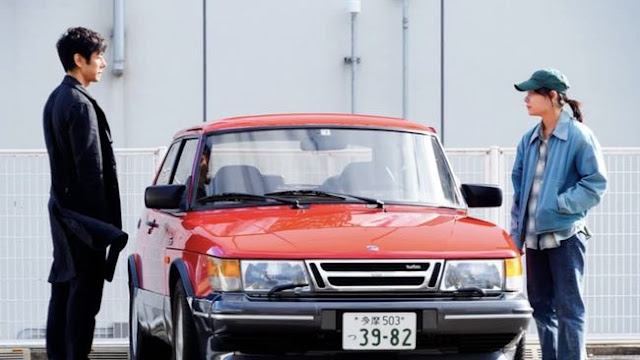

Drive My Car (Analisa & Penjelasan) (2021)
Drive My Car (2021), disutradarai oleh Ryusuke Hamaguchi, merupakan adaptasi dari cerpen Haruki Murakami yang mengangkat tema kesepian, penyesalan, dan pencarian makna hidup. Film ini mengisahkan Yusuke Kafuku (Hidetoshi Nishijima), seorang sutradara teater yang berjuang dengan kenyataan setelah istrinya, Oto (Reika Kirishima), meninggal mendadak. Oto memiliki hubungan dengan banyak pria selama pernikahannya, dan Yusuke, meskipun mengetahui hal tersebut, tidak pernah mengonfrontasi istrinya. Film ini menunjukkan betapa sulitnya bagi Yusuke untuk menghadapi kenyataan bahwa perkawinannya telah rusak, dan ia memilih untuk mengabaikan kenyataan tersebut, suatu keputusan yang akhirnya menghancurkan hubungan mereka.
Film ini menawarkan simbolisme yang mendalam, seperti peran Yusuke dalam drama Uncle Vanya karya Anton Chekhov, yang menggambarkan perasaan terpendamnya. Drama yang ia pentaskan juga menggunakan multibahasa, menggambarkan bagaimana meskipun kita berkomunikasi dengan cara yang berbeda, kita tetap bisa saling memahami. Kisah Oto tentang seorang gadis yang membunuh penyusup menggambarkan bagaimana Oto merasa pernikahannya telah hancur, namun tidak ada yang menyadari atau memperhatikan.
Dalam aspek cinta, seks, dan perselingkuhan, film ini menggambarkan kompleksitas hubungan manusia. Meskipun Oto berselingkuh, ia tetap mencintai Yusuke. Misaki (Toko Miura), supir pribadi Yusuke, mengingatkan bahwa cinta dan perselingkuhan bukanlah hal yang saling bertentangan. Film ini menggali bagaimana manusia, dengan segala kekurangannya, tidak bisa hanya dikotakkan dalam label "baik" atau "jahat."
Yusuke dan Oto memiliki hubungan yang terasa kaku, dipengaruhi oleh trauma kehilangan anak perempuan mereka. Namun, Yusuke tidak mampu mengonfrontasi perselingkuhan Oto, yang membuatnya semakin terjebak dalam denial dan rutinitasnya yang "normal." Ketika Oto akhirnya ingin berbicara serius, Yusuke memilih untuk menghindarinya, dan akhirnya Oto meninggal sebelum mereka bisa berdamai.
Film ini juga menggali tema ikhlas dan penderitaan. Dialog di akhir film, di mana Yusuke berkata kepada Misaki bahwa mereka harus terus hidup meskipun penuh dengan duka, menunjukkan bahwa hidup harus diterima apa adanya. Mengikhlaskan orang yang kita cintai adalah proses seumur hidup, dan tidak ada momen tertentu yang bisa dengan mudah mengakhiri rasa kehilangan. Akhirnya, meskipun Yusuke dan Misaki mungkin belum sepenuhnya "ikhlas", mereka belajar untuk terus menjalani hidup meskipun kesedihan tetap ada.
Secara keseluruhan, Drive My Car adalah film yang dalam dan emosional, dengan gaya penceritaan yang lambat dan penuh simbolisme. Ia mengajak penonton untuk merenung tentang hubungan manusia, penyesalan, dan bagaimana kita menghadapi kenyataan hidup yang sulit.